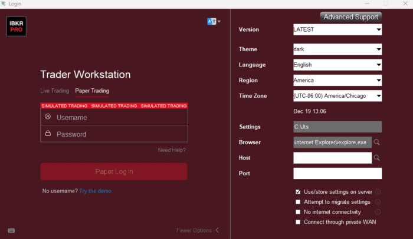

A user can confirm their Operator Time Zone by launching Trader Workstation then, before logging in, click “More Options >”.

Operator Time Zone is the local time set by the user in Trader Workstation. The Operator Time Zone typically maintains a unique formatting structure separate from Exchange Time Zones; however, they can match.
A user can confirm their Operator Time Zone by launching Trader Workstation then, before logging in, click “More Options >”.
Users can then confirm their active Operator Time Zone by referencing the “Time Zone” field.
For US residents, this will typically appear as “America/New_York”, “America/Chicago”, or “America/Los_Angeles”. It is essential to note the Time Zone value, as this will be the value supplied when making requests with the Operator Time Zone.

After logging in to Trader Workstation or IB Gateway, you would be able to submit time stamps in the format of “YYYYMMDD HH:mm:ss Operator/Time_Zone”.
Given our prior example, a historical data endDateTime value would appear as”20250101 23:59:59 America/Chicago”. This would mean the latest value I want is just before midnight in Chicago on January 1st, 2025. Even if I am trading contracts in New York or overseas, all historical data requests would be relative to my own time zone.